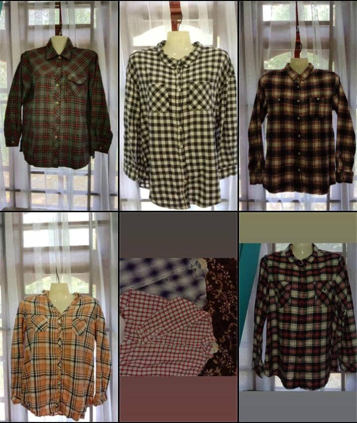

My Experience

I once opened an online business selling bundle sweatshirts. But I had to stop the business because I continued my studies at UITM. I was afraid that when I continued my business, I would not focus on my learning. While involved with the business, there were many things I had to deal with such as not making a profit, lack of money, getting a bad sweatshirt and lack of customers. But I am thankful to Allah S.W.T for giving me the opportunity to be in that business. When opening a business we must be patient and prepared mentally and physically because there are many challenges when venturing into the field of business. In addition, I also have experience as an assistant coach in the KOR Kesatria Brassband organization. I was appointed as logistics unit officer. Furthemore, I also play clarinet and flag instruments. Every weekend we would practice until late at night in order to participate in the Drum Competitions run by the Kor Kesatria Brassband.